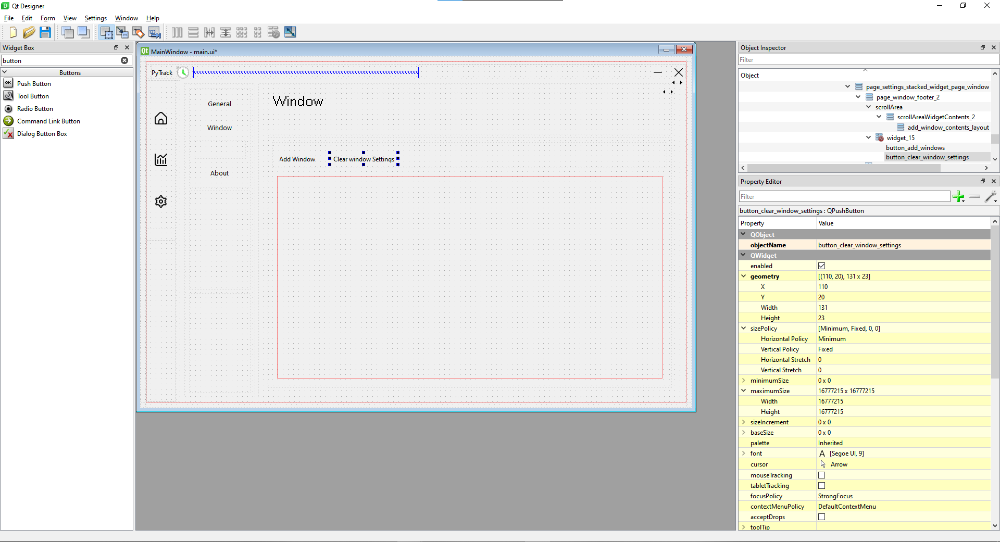
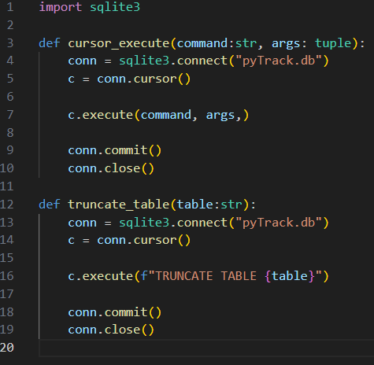
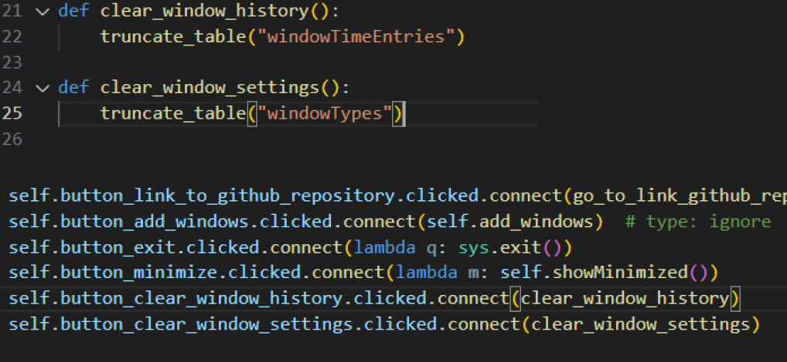

Whimsical update #1
To mask my procrastination and give the illusion of productivity
I've got this todo-list of some sort in my repository for pytrack and it's probably time to take the task of creating an option to clear out the window history and windows settings. Hopefully this will be easy and fast because I am leaving in an hour and honestly I can't see myself coming back to this after I got home from school. With that being said lets get into it
The Speedrun Begin
First and foremost I need to create a button on the ui to clear the history. Thankfully with PySide's designer it's as easy as duplicating some of my existing buttons, placing them in the right place, and renaming them. No code was touch thanks to this application.
 Next will be creating the function that will delete or drop the whole database for windows settings or history respectively. Before that I noticed I never had a database helper and I've been programming the low level sql stuff right into the classes I also want to solve this problem and created a new database_helper.py file. This file will house all the sql related stuff. I will try to refactor the code base to use this helper in the future. As of now I only have these 2 basic functions I was figuring out if having more specific function for specific things is better but for now I will just use these 2. I think I will decide if I will add more when I actually refactor all the sql stuff sprinkled on the code base.
Okay so last thing is to actually connect these functions into the buttons. Also I decided to use specific functions for each thing in my opinion this will be cleaner and easier to read. I also refactored the code base to work this way. This is it for my whimsical update in pytrack for this day in the future I think I would do more of this since its fast and makes me think that I'm not rotting away.